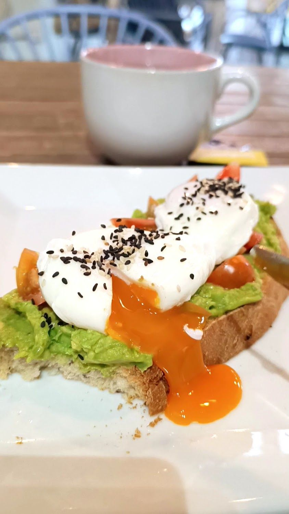
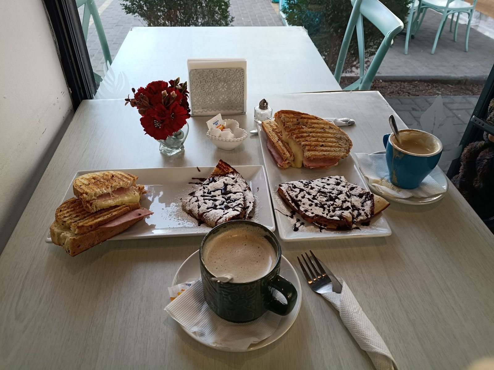
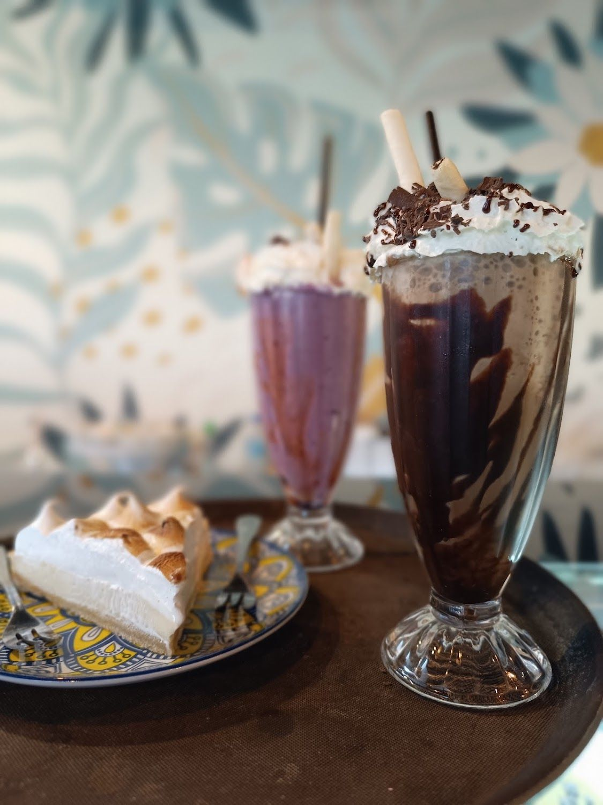
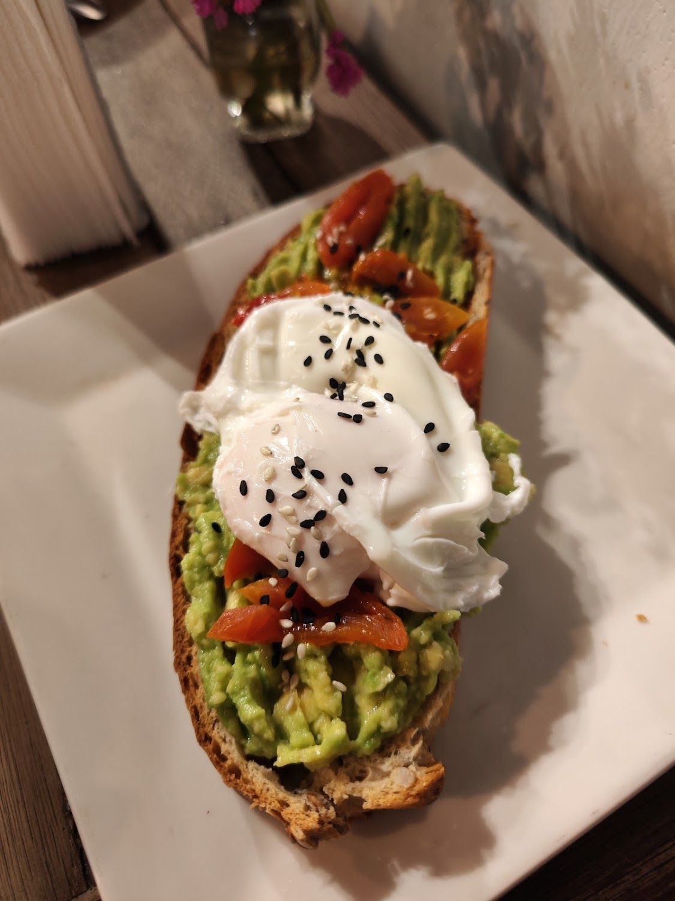
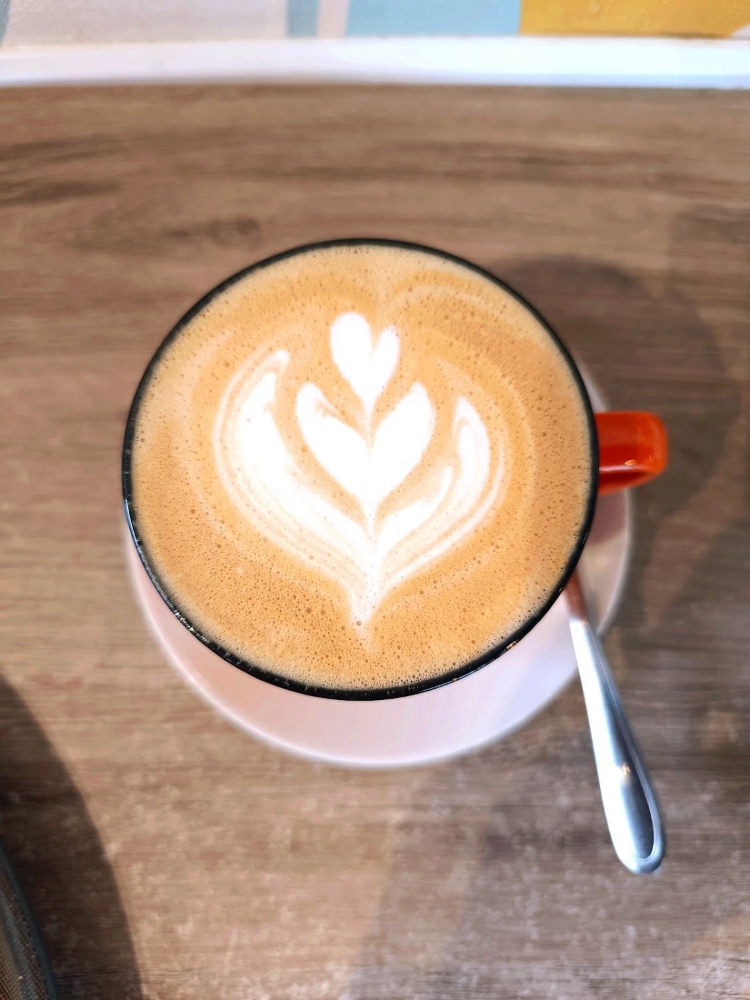
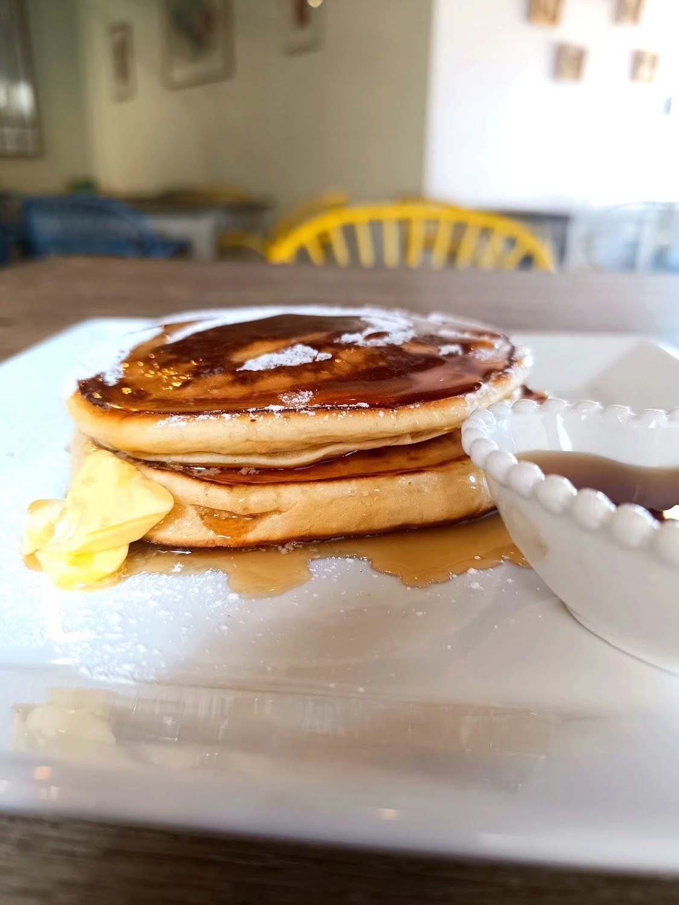

Los huevos pochados
“Les quedan buenísimos”, dice una clienta que trae ahí a sus visitas. Van sobre tostada de palta, y es lo más fotografiado del local.
Ver la carta →B. Villalobos 1092, local 8 · Rancagua
Huevos pochados, tostadas de palta, panqueques y tortas por porción, bajo un mural de hojas que cubre la pared entera. Con opciones sin gluten y veganas.
Lunes a viernes de 08:00 a 20:30

“Les quedan buenísimos”, dice una clienta que trae ahí a sus visitas. Van sobre tostada de palta, y es lo más fotografiado del local.
Ver la carta →“El menú es muy variado y cuesta elegir dadas las diversas opciones”. Desayunos, sándwiches, ensaladas, wraps y tortas por porción.
Leer reseñas →Son pet friendly, y lo dicen ellos mismos en su Instagram. Con terraza afuera para sentarse con él.
Cómo llegar →Nosotros
Abren a las ocho de la mañana, y eso define todo lo demás.

“Muy bueno y fresco todo, sus trozos de tortas y sándwich son grandes, justos para compartir.” Witchita Francisca, Local Guide con 41 reseñas
Es lo que más se repite: desayunos variados, pastelería por porción y sándwiches grandes. Y una carta con tantas opciones que —textual— “cuesta elegir”.

Su propia bio lo resume en dos líneas: “Sin gluten y veganos 💚 Petfriendly 🐶”. No es una cafetería especializada — es una carta amplia que además tiene esas opciones.
Una clienta habitual lo confirma: “suman productos veganos y sin azúcar. Muy recomendable, siempre vuelvo”.
Ver todo lo que hay →


Todas las fotos son del propio local, de su ficha de Google Maps.
Carta
Productos reales, confirmados en su ficha, sus fotos y sus reseñas.
Productos confirmados en su ficha de Google, sus fotos y sus reseñas.
Reseñas
Reales, copiadas tal cual de su ficha de Google Maps.
★★★★★
Es una cafetería muy agradable. Sus desayunos son variados y deliciosos. También tiene buena pastelería, y suman productos veganos y sin azúcar. Muy recomendable, siempre vuelvo
★★★★★
Me gusta mucho! Tienen variedad de desayunos, los huevos pochados les quedan buenísimos, los precios son buenos. Cuando vienen visitas los llevo y quedo de reina. Lo recomiendo
★★★★★
Muy bueno y fresco todo, sus trozos de tortas y sándwich son grandes, justos para compartir.
Redes
Sólo lo verificado. Ningún perfil inventado.
Es su único canal de contacto: no publican teléfono.
Su horario de Google coincide con el de su Instagram.
Visítanos
B. Villalobos 1092, local 8
Rancagua, Región de O'Higgins
Plus Code R76G+JM
Lunes a viernes de 08:00 a 20:30
Su ficha de Google y la bio de su Instagram dicen exactamente lo mismo. Verificado el 15-09-2026.
Servicios declarados en su ficha de Google. Y sí: puedes venir con tu perro.